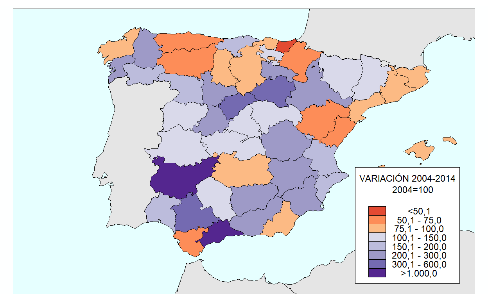
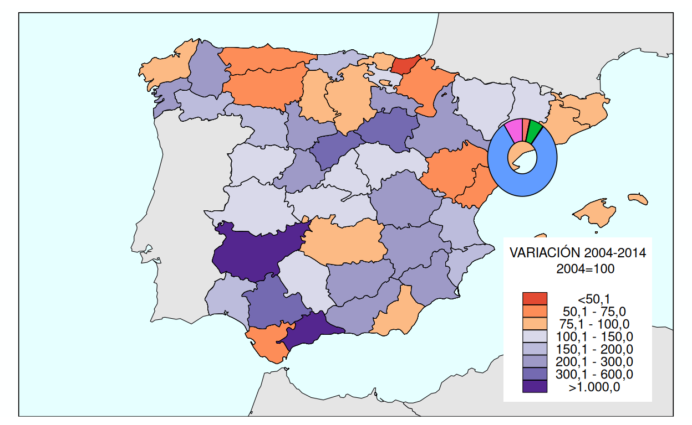
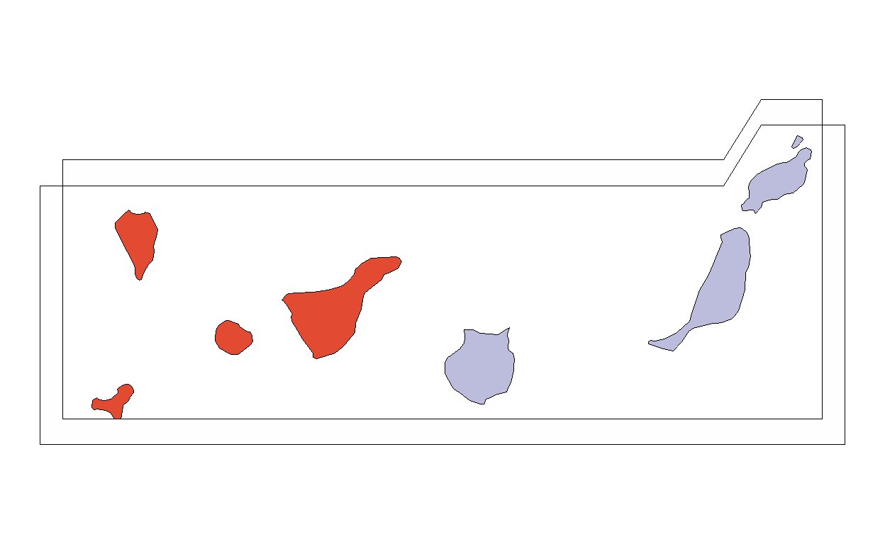

There are three elements represented in this map. The colors within the provinces represent how much variation in terms of energy production there has been made in each province between 2004 and 2014. The pie charts represent both the amount of energy that is produced in each of the 52 provinces by the size of the pie chart and the source of this energy.
The Data.
The data that is needed to produce this map is available in the following website: https://centrodedescargas.cnig.es/CentroDescargas/busquedaRedirigida.do?ruta=PUBLICACION_CNIG_DATOS_VARIOS/aneTematico/Espana_Produccion-de-energia-electrica_2004-2014_mapa_15612_spa.pdf
The downloaded file will consist in a folder with a couple of things that will be necessary for the reproduction of our visualization. In the data folder, there are 3 main files, even though we get 17: an .xls file with all our data and two shapefiles, which is an older format that contains geometrical information of both the spanish peninsula, and its islands. The excel has 8 sheets in it, one of them gathering the data on the variation in energy production of each province of Spain from 2004 to 2014 and the other seven representing the energy production, being numbered by source. 9453 takes on hydropower, 9454 windpower, 9455 solar, 9456 renowable thermal, 9457 carbon, gas, cogeneration, among others related to gas, 9458 nuclear, 9459 is the energy total and 9560 is the variation between 2004 and 2014.
In order to put all the information in a tidy dataset, I’ll get each sheet in a separable sheet, selecting only the relevant variables, since there is explicatory metadata in each sheet, and adding a “Type” variable. Then, I’ll bind everything together, resulting in our tidy “electricity” dataset:
electricity_excel <- "produccion_electricidad.xls"
hydro_2014 <- read_excel(electricity_excel, sheet = "Variable_9453") |>
select("Nombre unidad territorial", "Valor del dato") |>
rename(Province = "Nombre unidad territorial", MWh = "Valor del dato") |>
mutate(Type = "Hidráulica")
wind_power_2014 <- read_excel(electricity_excel, sheet = "Variable_9454") |>
select("Nombre unidad territorial", "Valor del dato") |>
rename(Province = "Nombre unidad territorial", MWh = "Valor del dato") |>
mutate(Type = "Eólica")
solar_2014 <- read_excel(electricity_excel, sheet = "Variable_9455") |>
select("Nombre unidad territorial", "Valor del dato") |>
rename(Province = "Nombre unidad territorial", MWh = "Valor del dato") |>
mutate(Type = "Solar")
rw_thermal_2014 <- read_excel(electricity_excel, sheet = "Variable_9456") |>
select("Nombre unidad territorial", "Valor del dato") |>
rename(Province = "Nombre unidad territorial", MWh = "Valor del dato") |>
mutate(Type = "Térmica renovable y otras")
carbon_and_gas_2014 <- read_excel(electricity_excel, sheet = "Variable_9457") |>
select("Nombre unidad territorial", "Valor del dato") |>
rename(Province = "Nombre unidad territorial", MWh = "Valor del dato") |>
mutate(Type = "Carbón, fuelgas, ciclo combinado y cogeneración")
nuclear_2014 <- read_excel(electricity_excel, sheet = "Variable_9458") |>
select("Nombre unidad territorial", "Valor del dato") |>
rename(Province = "Nombre unidad territorial", MWh = "Valor del dato") |>
mutate(Type = "Nuclear")
total_2014 <- read_excel(electricity_excel, sheet = "Variable_9459") |>
select("Nombre unidad territorial", "Valor del dato") |>
rename(Province = "Nombre unidad territorial", MWh = "Valor del dato") |>
mutate(Type = "Total")
variation_2004_2014 <- read_excel(electricity_excel, sheet = "Variable_9460") |>
select("Nombre unidad territorial", "Valor del dato") |>
rename(Province = "Nombre unidad territorial", MWh = "Valor del dato") |>
mutate(Type = "Variación 2004 - 2014")
electricity_ <- bind_rows(
hydro_2014, wind_power_2014, solar_2014, rw_thermal_2014,
carbon_and_gas_2014, nuclear_2014, total_2014, variation_2004_2014)
electricity_# A tibble: 416 × 3
Province MWh Type
<chr> <dbl> <chr>
1 Araba/Álava 151127. Hidráulica
2 Albacete 313163. Hidráulica
3 Alacant/Alicante 2631. Hidráulica
4 Almería 48040. Hidráulica
5 Ávila 158772. Hidráulica
6 Badajoz 204660 Hidráulica
7 Illes Balears 0 Hidráulica
8 Barcelona 359347. Hidráulica
9 Burgos 152779. Hidráulica
10 Cáceres 2912760. Hidráulica
# ℹ 406 more rowsWe can see that the variation is represented as a range in the provinces, therefore we have to add a categorical variable that corresponds to the brackets of the legend.
category_variation <-electricity_ |>
filter(Type == "Variación 2004 - 2014") |>
mutate(
variation_category = case_when(
MWh < 50.1 ~ "<50,1",
MWh >= 50.1 & MWh <= 75.0 ~ "50,1 - 75,0",
MWh > 75.0 & MWh <= 100.0 ~ "75,1 - 100,0",
MWh > 100.0 & MWh <= 150.0 ~ "100,1 - 150,0",
MWh > 150.0 & MWh <= 200.0 ~ "150,1 - 200,0",
MWh > 200.0 & MWh <= 300.0 ~ "200,1 - 300,0",
MWh > 300.0 & MWh <= 600.0 ~ "300,1 - 600,0",
MWh > 1000.0 ~ ">1.000,0",
TRUE ~ NA_character_),
variation_category = factor(
variation_category,
levels = c("<50,1", "50,1 - 75,0", "75,1 - 100,0",
"100,1 - 150,0", "150,1 - 200,0",
"200,1 - 300,0", "300,1 - 600,0", ">1.000,0"))) |>
select(Province, variation_category)
electricity <- category_variation |> left_join(electricity_, by = c("Province"))
electricity# A tibble: 416 × 4
Province variation_category MWh Type
<chr> <fct> <dbl> <chr>
1 Araba/Álava 100,1 - 150,0 151127. Hidráulica
2 Araba/Álava 100,1 - 150,0 257584. Eólica
3 Araba/Álava 100,1 - 150,0 17653. Solar
4 Araba/Álava 100,1 - 150,0 7182. Térmica renovable y otras
5 Araba/Álava 100,1 - 150,0 359081 Carbón, fuelgas, ciclo com…
6 Araba/Álava 100,1 - 150,0 0 Nuclear
7 Araba/Álava 100,1 - 150,0 792627. Total
8 Araba/Álava 100,1 - 150,0 114. Variación 2004 - 2014
9 Albacete 200,1 - 300,0 313163. Hidráulica
10 Albacete 200,1 - 300,0 4513126. Eólica
# ℹ 406 more rowsTo get the map of Spain, I will use both stringfiles that were attached in the folder. In order to move the Canary Islands map around to fit the visualization, we’ll be doing two joint datasets, one for each stringfile. I will first create the plot with one shapefile and then with the other, so that I can superpose them afterwards with the right frame.
To read the files, I will use the function st_read() from the “sf” package.
Reading layer `se89_10_admin_prov_a_x_20140101' from data source
`C:\Users\NFuru\Desktop\MASTER\DATA VISUALIZATION\Final Ugly Electric Bull\dataviz\_projects\2025\100564888\se89_10_admin_prov_a_x_20140101.shp'
using driver `ESRI Shapefile'
Simple feature collection with 50 features and 18 fields
Geometry type: MULTIPOLYGON
Dimension: XY
Bounding box: xmin: -9.298027 ymin: 35.25069 xmax: 4.314508 ymax: 43.77594
Geodetic CRS: ETRS89Reading layer `se89_10_admin_prov_a_y_20140101' from data source
`C:\Users\NFuru\Desktop\MASTER\DATA VISUALIZATION\Final Ugly Electric Bull\dataviz\_projects\2025\100564888\se89_10_admin_prov_a_y_20140101.shp'
using driver `ESRI Shapefile'
Simple feature collection with 2 features and 18 fields
Geometry type: MULTIPOLYGON
Dimension: XY
Bounding box: xmin: -18.16066 ymin: 27.638 xmax: -13.4192 ymax: 29.29093
Geodetic CRS: ETRS89Now we can plot the background map, that features the variation in energy from 2004 to 2014. To do that, we have to use geom_sf, since it is a map, and the HEX value of the colors will be extracted with an online color picker. Then, each color will be mapped to a variation category. Lastly, I will add the neighbouring countries of Spain.
First, I will create the neighbouring countries data. Since the data for the shape of the borders comes from a different source, we need to make sure that both use the same CRS (Coordinate Reference System), so that there isn’t any offsets in the limits between the countries.
neighbours <- gisco_get_countries(
country = c("Portugal", "France", "Marocco", "Algeria", "Andorra"),
year = "2013", resolution = "10")Now we can do our first plot of the background map, that features the variation in energy from 2004 to 2014. To do that, we have to use geom_sf, since it is a map. First, the neighbouring countries’ shape will be plotted and then the shape of Spain’s provinces. The HEX value of the legend will be extracted with an online color picker. Each color will be mapped to a variation category with scale_fill_manual().
fondo_izquierdo <- tibble(
x = c(-13, -16, -16, -13, -13),
y = c(34.75, 34.75, 44.5, 44.5, 34.75))
borde_completo <- tibble(
x = c(-13, 5.5, 5.5, -13, -13),
y = c(34.75, 34.75, 44.5, 44.5, 34.75))
map_replica <- ggplot(electricity_peninsula) +
geom_polygon(
data = fondo_izquierdo,
aes(x = x, y = y),
fill = "#feffff",
colour = NA) + # This is our data, put directly in the ggplot() function
geom_sf(data = neighbours, # Here we have the shape of the neighbours of Spain
fill = "#e5e5e5",
color = "black",
size = 0.2,) +
theme(panel.background = element_blank()) +
geom_sf(aes(fill = variation_category), # Since we're plotting a Map, we use geom_sf() in both
color = "black", size = 0.2) +
coord_sf(
xlim = c(-16, 5.5),
ylim = c(34.75, 44.5),
expand = FALSE) +
# a similar framing to the one of the original map
theme_void() + # theme_void() eliminates the x and y axis
theme(panel.background = element_rect(
fill = "#e6ffff",
color = NA)) + # panel.background changes the background color
geom_path(
data = borde_completo,
aes(x = x, y = y),
colour = "black",
linewidth = 0.3)
map_replica
From the start, we get a pretty accurate plot from the background map. There are some minor adjustments to be made, due to small offsets in the borders…
The legend has to be moved as well and some other adjustments have to be made like centering the text. Also, the map is scaled each time you plot i
diversion map
variation_map <- map_replica +
scale_fill_manual( # This function is used to give your own color palette
values = c(
"<50,1" = "#e34a32",
"50,1 - 75,0" = "#fd8d58",
"75,1 - 100,0" = "#fcba84",
"100,1 - 150,0" = "#d9d9ea",
"150,1 - 200,0" = "#bcbcdc",
"200,1 - 300,0" = "#9e9ac7",
"300,1 - 600,0" = "#746ab1",
">1.000,0" = "#54268f"),
name =
"VARIACIÓN 2004-2014
2004=100
") +
guides(fill = guide_legend(
direction = "vertical", # Vertical legend
title.position = "top", # Title on top
title.hjust = 0.5, # Centered title
label.position = "right", # Where each category is
keywidth = unit(0.4, "cm"), # This makes the legend wider
keyheight = unit(0.2, "cm"), # This makes the legend longer
)) +
theme(
legend.position = c(0.87, 0.27), # Position of the legend
legend.background = element_rect( # Background of the legend
fill = "#FFFFFF", color = "black"),
legend.text = element_text(size = 8, hjust = 0.5), # Text of the categories of the legends
legend.title = element_text(size = 8, lineheight = 0.5),
legend.margin =
margin(4, 4, 4, 4), # Margin of the legend
legend.key =
element_rect(color = NA, fill = NA),
legend.key.spacing.y = unit(-0.01, "cm"))
variation_map
variation_legend <- gtable_filter(ggplot_gtable(ggplot_build(variation_map)), "guide-box")real map without first legend.
map_replica <- map_replica +
scale_fill_manual(
values = c(
"<50,1" = "#e34a32",
"50,1 - 75,0" = "#fd8d58",
"75,1 - 100,0" = "#fcba84",
"100,1 - 150,0" = "#d9d9ea",
"150,1 - 200,0" = "#bcbcdc",
"200,1 - 300,0" = "#9e9ac7",
"300,1 - 600,0" = "#746ab1",
">1.000,0" = "#54268f"),
name =
"VARIACIÓN 2004-2014
2004=100
") +
guides(fill = "none") # with colors but without legend
map_replica
Pie charts. First, centroids.
electricity_peninsula <- electricity_peninsula |> # First we calculate the centre of each
mutate(centre = st_centroid(geometry)) |> # province by using st_centroid()
mutate(longitude = st_coordinates(centre)[,1], # Now we separate longitude and latitude
latitude = st_coordinates(centre)[,2]) # IS THIS NECESSARY?
electricity_canary <- electricity_canary |>
mutate(centre = st_centroid(geometry)) |> # province by using st_centroid()
mutate(longitude = st_coordinates(centre)[,1], # Now we separate longitude and latitude
latitude = st_coordinates(centre)[,2])In order to do the pie charts, we have to disregard the tidyverse principle of… We have to drop the geometry because there
untidy_peninsula <- electricity_peninsula |>
st_drop_geometry() |> # I use st_drop_geometry to avoid issues in the pivot
pivot_wider(
names_from = Type,
values_from = MWh) |>
mutate(
radius = sqrt(Total / pi) * 0.00031) # Changing the value of the coefficient until it fits
untidy_canary <- electricity_canary |>
st_drop_geometry() |> # I use st_drop_geometry to avoid issues in the pivot
pivot_wider(
names_from = Type,
values_from = MWh) |>
mutate(
radius = sqrt(Total / pi) * 0.00031) Moving the pie charts
untidy_peninsula <- untidy_peninsula |>
mutate(
longitude_moved = case_when(
Province == "A Coruña" ~ longitude - 0.2,
Province == "Asturias" ~ longitude + 0.1,
Province == "Lleida" ~ longitude + 0.25, # Mover a la derecha (nota: puede ser "Lleida")
Province == "Barcelona" ~ longitude + 0.075, # Mover hacia el mar
Province == "Tarragona" ~ longitude + 0.15, # Mover hacia el mar
Province == "Valencia/València" ~ longitude + 0.6,
Province == "Alacant/Alicante" ~ longitude - 0.2,
Province == "Granada" ~ longitude - 0.1, # Mover hacia el oeste
Province == "Cádiz" ~ longitude - 0.1, # Mover hacia el océano
Province == "Ceuta" ~ longitude + 0.3, # Mover hacia el estrecho
Province == "Melilla" ~ longitude + 0.3, # Mover hacia el este
TRUE ~ longitude
),
latitude_moved = case_when(
Province == "A Coruña" ~ latitude + 0.4, # Mover hacia arriba
Province == "Asturias" ~ latitude + 0.3, # Mover hacia arriba
Province == "Bizkaia" ~ latitude + 0.3, # Mover hacia arriba
Province == "Guadalajara" ~ latitude - 0.075 , # Mover hacia abajo
Province == "Lleida" ~ latitude + 0.2, # Mover hacia arriba
Province == "Barcelona" ~ latitude - 0.3, # Mover hacia el mar
Province == "Tarragona" ~ latitude - 0.15, # Mover hacia abajo
Province == "Valencia/València" ~ latitude - 0.2,
Province == "Alacant/Alicante" ~ latitude - 0.1,# Mover hacia abajo
Province == "Murcia" ~ latitude - 0.1, # Mover hacia abajo
Province == "Granada" ~ latitude - 0.1, # Mover hacia el sur
Province == "Cádiz" ~ latitude - 0.1, # Mover hacia el sur
Province == "Melilla" ~ latitude + 0.05, # Ajustar ligeramente
Province == "Cáceres" ~ latitude - 0.05,
Province == "Badajoz" ~ latitude - 0.2, # Mover hacia arriba
TRUE ~ latitude
)
)The doughnut pie is the first layer since other pie charts are superposed to it.
map_replica <- map_replica +
new_scale_fill() +
geom_scatterpie(data = untidy_peninsula |> # This wil only apply to the doughnut pie
filter(
Province == "Tarragona"),
aes(x = longitude_moved, y = latitude_moved, r = radius),
cols =
c("Hidráulica", "Solar", "Eólica", # The order of the concatenate gives us the order
"Térmica renovable y otras", # of the colors clockwise
"Nuclear",
"Carbón, fuelgas, ciclo combinado y cogeneración"),
donut_radius = 0.42,
color = "black", linewidth = 0.3) # This controls for the lines in the pie itself
map_replica
map_replica <- map_replica +
geom_scatterpie(data = untidy_peninsula |> filter(Province != "Tarragona"),
aes(x = longitude_moved, y = latitude_moved, r = radius),
cols =
c("Hidráulica", "Solar", "Eólica", # The order gives us the order of the pie charts
"Térmica renovable y otras", # It is set clockwise, starting from 12
"Nuclear",
"Carbón, fuelgas, ciclo combinado y cogeneración"),
color = "black", linewidth = 0.3) # This controls for the lines in the pie itself
map_replica
legend 2
font_add("weezer", regular = "weezerfont.ttf") # needed font for the graph
showtext_auto()
map_replica <- map_replica +
scale_fill_manual(
values = c(
"Hidráulica" = "#a6d0e4",
"Solar" = "#ffd92e",
"Eólica" = "#4caf4a",
"Térmica renovable y otras" = "#fcb461",
"Nuclear" = "#fb8172",
"Carbón, fuelgas, ciclo combinado y cogeneración" = "#d4c0a0"
),
labels = c(
"Carbón, fuelgas, ciclo combinado y cogeneración" = "Carbón, fuelgas, ciclo\ncombinado y cogeneración"
),
name = NULL
) +
guides(fill = guide_legend(
direction = "vertical", # Vertical legend
label.position = "right", # Where each category is
keywidth = unit(0.3, "cm"), # This makes the legend wider
keyheight = unit(0.5, "cm"), # This makes the legend longer
)) +
theme(
legend.position = c(0.25, 0.395), # Position of the legend
legend.background = element_blank(),
legend.text = element_text(size = 10,
family = "weezer"), # Text of the categories of the legends
legend.key =
element_rect(color = NA, fill = NA),
legend.key.spacing.y = unit(0.1, "cm"))
map_replica
radios <- c(
sqrt( 209944.0 / pi) * 0.00031,
sqrt( 1504064.7 / pi) * 0.00031,
sqrt( 5135063.7 / pi) * 0.00031,
sqrt(13223198.9 / pi) * 0.00031,
sqrt(19186882.5 / pi) * 0.00031,
sqrt(28178775.6 / pi) * 0.00031)
y_centers <- c(40, 40.145, 40.32, 40.558, 40.7, 40.85) + 0.5
# Calcular donde está la parte de ARRIBA de cada círculo
y_tops <- y_centers + radios
# TODOS en la MISMA X, Y va subiendo
# Datos para la leyenda
legend_data <- tibble(
MWh = c(210, 1.500, 5.000, 10.000, 20.000, 28.179),
radius = radios,
x = -11.5, # ← TODOS la misma X
y = c(40, 40.145, 40.32, 40.558, 40.7, 40.85) + 0.5 # ← Valores fijos espaciados por 1 grado
)|>
mutate(
# Punto en el borde derecho del círculo (donde Y = centro del círculo)
x_start = x + radius, # Borde derecho
y_start = y # Misma altura que el centro
)
map_replica <-
map_replica +
# Círculos (SIN línea vertical)
geom_circle(data = legend_data,
aes(x0 = x, y0 = y, r = radius),
color = "#151d1c", fill = NA, linewidth = 0.3) +
geom_segment(data = legend_data,
aes(x = x, xend = -11 + max(radios) + 0.3, # ← Mismo xend para todas
y = y_tops, yend = y_tops), # ← yend = y (HORIZONTAL)
linetype = "dotted", linewidth = 0.3, color = "#151d1c") +
geom_text(data = legend_data,
aes(x = x + max(radius) + 0.4, y = y_tops,
label = format(MWh, big.mark = ".", decimal.mark = ",")),
hjust = 0, size = 4, family = "weezer") +
annotate("text", x = -11.05, y = 42.99,
label = "PRODUCCIÓN DE ENERGÍA\nELÉCTRICA\n2014\n(en miles de MWh)",
size = 3.5, hjust = 0.5, lineheight = 0.5)
map_replica
canary_islands <- ggplot(electricity_canary) +
geom_sf(aes(fill = variation_category),
color = "black", size = 0.2) +
theme_void() +
theme(
# plot.background = element_rect(fill = "#e6ffff", color = NA),
plot.background = element_blank(),
plot.margin = margin(0, 0, 0, 0)) +
scale_fill_manual(
values = c(
"<50,1" = "#e34a32",
"50,1 - 75,0" = "#fd8d58",
"75,1 - 100,0" = "#fcba84",
"100,1 - 150,0" = "#d9d9ea",
"150,1 - 200,0" = "#bcbcdc",
"200,1 - 300,0" = "#9e9ac7",
"300,1 - 600,0" = "#746ab1",
">1.000,0" = "#54268f"),
name =
"VARIACIÓN 2004-2014
2004=100
") +
guides(fill = "none")
canary_islands
d <- 0.15
# Banda definida como un único polígono cerrado, trazando todo el perímetro
canary_band <- tibble(
x = c(# Exterior (empezando arriba derecha, sentido antihorario)
-13.75, -14, -18.5, -18.5, -13.2, -13.2, -13.75,
# Esquina para cerrar y conectar con interior
-13.75,
# Interior (sentido horario)
-13.2 - d, -13.2 - d, -18.5 + d, -18.5 + d, -14, -13.75),
y = c(# Exterior
29.35, 29, 29, 27.5, 27.5, 29.35, 29.35,
# Conexión
29.35 + d,
# Interior
29.35 + d, 27.5 + d, 27.5 + d, 29 + d, 29 + d, 29.35 + d))
canary_box_outer <- tibble(
x = c(-13.75, -13.2, -13.2, -18.5, -18.5, -14, -13.75),
y = c(29.35, 29.35, 27.5, 27.5, 29, 29, 29.35))
canary_box_inner <- tibble(
x = c(-13.75, -13.2 - d, -13.2 - d, -18.5 + d, -18.5 + d, -14, -13.75),
y = c(29.35 + d, 29.35 + d, 27.5 + d, 27.5 + d, 29 + d, 29 + d, 29.35 + d))
canary_islands <- canary_islands +
geom_polygon(
data = canary_band,
aes(x = x, y = y),
fill = "#fffeff") +
geom_path(
data = canary_box_outer,
aes(x = x, y = y),
colour = "black",
linewidth = 0.3) +
geom_path(
data = canary_box_inner,
aes(x = x, y = y),
colour = "black",
linewidth = 0.3)
canary_islands
canary_islands <- canary_islands +
new_scale_fill() +
geom_scatterpie(
data = untidy_canary,
aes(
x = longitude,
y = latitude,
r = radius
),
cols = c(
"Hidráulica",
"Solar",
"Eólica",
"Térmica renovable y otras",
"Nuclear",
"Carbón, fuelgas, ciclo combinado y cogeneración"
),
color = "black",
linewidth = 0.3
) +
scale_fill_manual(
values = c(
"Hidráulica" = "#a6d0e4",
"Solar" = "#ffd92e",
"Eólica" = "#4caf4a",
"Térmica renovable y otras" = "#fcb461",
"Nuclear" = "#fb8172",
"Carbón, fuelgas, ciclo combinado y cogeneración" = "#d4c0a0"
)) +
guides(fill = "none")
canary_islands
canary_islands <- ggplotGrob(canary_islands)map_replica <- map_replica +
annotation_custom(canary_islands,
xmin = -13.45,
xmax = -6.63,
ymin = 34.65,
ymax = 36.8 )
map_replica
map_replica <- map_replica +
annotation_custom(variation_legend)
map_replica
# map_replica <-
map_replica +
annotate(
"text",
x = 4.88, y = 44,
label = "PRODUCCIÓN DE ENERGÍA ELÉCTRICA",
size = 6, fontface = "bold", hjust = 1, family = "sans") +
annotate(
"text",
x = 5.3, y = 35.3,
label = "Fuente: Estadísticas Eléctricas Anuales. MINETAD",
size = 2.5, hjust = 1, family = "weezer") +
annotate(
"text",
x = 5.3, y = 34.95,
label = "Elaborado por: Instituto Geográfico Nacional. Atlas Nacional de España",
size = 2.5, hjust = 1, fontface = "italic", family = "weezer")# map_replicaspain_provinces_grid <- tibble(
name = c(
# row 1
"A Coruña", "Lugo", "Asturias", "Cantabria", "Vizcaya", "Álava", "Guipúzcoa", "Navarra", "Huesca", "Lleida", "Girona",
# row 2
"Pontevedra", "Ourense", "León", "Palencia", "Burgos", "La Rioja", "Zaragoza", "Tarragona", "Barcelona",
# row 3
"Zamora", "Valladolid", "Segovia", "Soria", "Teruel", "Castellón",
# row 4
"Salamanca", "Ávila", "Madrid", "Guadalajara", "Cuenca", "Valencia", "Baleares",
# row 5
"Cáceres", "Badajoz", "Toledo", "Ciudad Real", "Albacete", "Alicante",
# row 6
"Huelva", "Sevilla", "Córdoba", "Jaén", "Murcia",
# row 7
"Cádiz", "Málaga", "Granada", "Almería",
# row 8
"Ceuta", "Melilla", "Las Palmas", "Santa Cruz de Tenerife"),
code = c(
# row 1
"ACR", "LUG", "AST", "CNT", "VZC", "ALA", "GUI", "NAV", "HSC", "LLE", "GIR",
# row 2
"PNT", "OUR", "LEO", "PAL", "BUR", "RIO", "ZAR", "TAR", "BAR",
# row 3
"ZAM", "VLD", "SEG", "SOR", "TER", "CST",
# row 4
"SLM", "AVL", "MAD", "GUA", "CNC", "VAL", "BAL",
# row 5
"CCR", "BDJ", "TOL", "CRE", "ALB", "ALI",
# row 6
"HUE", "SEV", "COR", "JAE", "MUR",
# row 7
"CAD", "MAL", "GRA", "ALM",
# row 8
"CEU", "MEL",
"LPA", "TFE"
),
row = c(
# row 1
1, 1, 1, 1, 1, 1, 1, 1, 1, 1, 1, # 11 cols
# row 2
2, 2, 2, 2, 2, 2, 2, 2, 2, # 9 cols
# row 3
3, 3, 3, 3, 3, 3, # 6 cols
# row 4
4, 4, 4, 4, 4, 4, 4, # 7 cols
# row 5
5, 5, 5, 5, 5, 5, # 6 cols
# row 6
6, 6, 6, 6, 6, # 5 cols
# row 7
7, 7, 7, 7, # 4 cols
# row 9
9, 9, 9, 9 # 4 cols
),
col = c(
# row 1
1, 2, 3, 4, 5, 6, 7, 8, 9, 10, 11,
# row 2
1, 2, 3, 4, 5, 6, 7, 8, 9,
# row 3
3, 4, 5, 6, 7, 8,
# row 4
3, 4, 5, 6, 7, 8, 11,
# row 5
3, 4, 5, 6, 7, 8,
# row 6
3, 4, 5, 6, 7.5,
# row 7
4, 5, 6, 7,
# row 8
1, 2, 4, 6.5),
stringsAsFactors = FALSE)